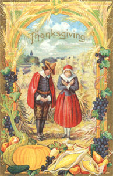

1 Mars now pulling close to the slightly brighter star Regulus in east before dawn.
3 Moon near Jupiter tonight; in 1841, the "October Gale" was whaling Nantucket's 'worst storm ever. It also sank 40 ships off Cape Cod and dumped 18 inches of snow inland at Middletown, Connecticut.
4 Battle of Germantown in 1777 featured early morning fog which combined with battle smoke to produce poor visibility in which American colonists mistakenly fired upon each other
5 Succoth; St. Francis of Assisi's Day; FULL MOON (Harvest Moon), 4:12 p.m. EDT.
6 Moon just below Saturn tonight.
7 Mars and star Regulus very close to each other in east before dawn (use binoculars to see contrasting orange of planet and blue-white of star).
8 This evening or (less likely) on one of the next two, the possibility of seeing quite a few of the rare Draconid meteors (shooting stars) fly out of the north.
9 Leif Eriksson Day; in 1903, 11 inches of rain fell at Central Park in New York City in 24 hours.
10 In 1804, the "Snow Hurricane", brought northerly gales from Maine to New Jersey and up to 36 inches of snow in the Green Mountains.
12 Columbus Day observed; Thanksgiving Day in Canada; Native Americans Day in South Dakota; LAST QUARTER MOON, 7:11 a.m. EDT
15 In 1954, Hurricane Hazel made landfall at Myrtle Beach, S.C., this day and then went up the coast inland with almost unabated fury, producing great damage all the way to Pennsylvania.
16 Moon below Mars today before dawn.
18 Alaska Day.
19 St. Luke's Little Summer (a supposedly warmer period) begins today.
20 NEW MOON, 6:09 a.m. EDT
21 Orionid meteor shower reaches peak before dawn this morning, when a score or more meteors per hour might be seen hurtling from the south if the sky is very clear and the observer is many miles from city lights; tomorrow, sun enters astrological sign Scorpio and (in an unrelated event) the swallows leave San Juan Capistrano.
23 Saturn at opposition (opposite from the sun in sky, thus rising at sunset and visible all night long) is the brightest object in the southeast at mid-evening, though much less bright than Jupiter, which is shining in the south then; this month, Saturn is slightly brighter than it has been in about a decade and appears slightly larger in telescopes than it has in about two decades!
24 United Nations Day.
25 Fall back one hour to standard time (you're supposed to set clocks back one hour at 2 a.m. today, but most of us will go to bed earlier and set our clocks then); this day in 1919, the temperature fell to 10'F below zero in Bismarck, North Dakota.
26 In 1859, four inches of October snow fell on New York City this day.
28 FIRST QUARTER MOON, 6:46 a.m. EST, end of St. Luke's Little Summer (see October 19 above).
29 Stock market collapsed this day in 1929, bringing on the Great Depression.
30 Venus at superior conjunction with the sun, thus almost directly on the opposite side of the sun from us and unviewable; sun enters constellation Libra at 11 p.m. EST
31 Halloween; Nevada Day; moon near Jupiter tonight.
1 All Saints Day; in 1966, Los Angeles hit 100 *F this day.
2 All Souls Day.
3 Election Day. 4 FULL MOON (Hunter's Moon), 12:18 a.m. EST
5 Peak of the Taurid meteor shower occurs around now-look for often bright and relatively slow meteors coming out of the east in the evening; Guy Fawkes Day (occasion for fireworks and raise hi fi -making) in England.
7 Halfway point of autumn; on this day in 1940, the Narrows Bridge at Tacoma, Washington, started vibrating in high winds and collapsed.
8 First storm warning by U.S. Army Signal Service was issued for the Great Lakes region this day in 1870 by Professor Increase Latham at Chicago.
9 In 1913, "Freshwater Fury" storm sank eight large ships on Lake Huron, killing 200 people.
10 LAST QUARTER MOON, 7:28 p.m. EST, Mercury at greatest evening elongation but not easy to see, low in the west-southwest about 30 minutes after sunset.
11 Veterans Day; Martinmas; start of St. Martin's Summer (supposedly warm period).
12 Temperature hit 105' F this day in 1906 in Craftonville, California.
13 Friday the 13th-for third and final time this year; moon to upper right of Mars before dawn this morning; Leonid meteor storm this day in 1833 produced "The Night the Stars Fell on Alabama" (see text of column and Nov. 16-17 below).
14 Jupiter halts its "retrograde" (westward) motion against the background of stars and resumes "direct" (eastward) motion.
16 Small chance of great Leonid meteor storm in the hours before dawn tomorrow (see text of column).
17 Better chance of great Leonid meteor storm late this evening or in hours before dawn tomorrow (see text of column).
18 NEW MOON, 11:27 EST
20 End of St. Martin's summer (see Nov. 11 above).
22 Sun enters astrological sign Sagittarius.
23 Sun enters constellation Scorpius at 4 a.m. EST
26 St. Catherine's Day,
26 Thanksgiving; FIRST QUARTER MOON, 7:23 p.m,
27 Moon near Jupiter this evening..
28 Biggest asteroid, Ceres, at opposition (requires binoculars and finder chart to identify-see current issue of Sky & Telescope magazine).
29 1st Sunday in Advent; sun enters constellation Ophiuchus at 11 p.m. EST, in 1969, 21 vehicles involved in a chain reaction collision in fog on the New Jersey Turnpike; six people killed and 17 injured.
30 Moon left of Saturn tonight.
|
 |
|
|